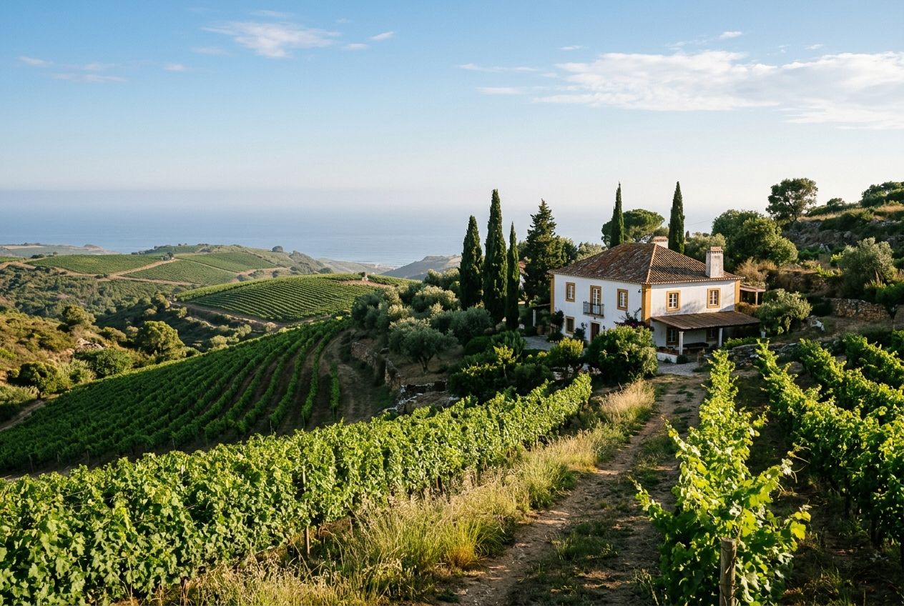

Bons Ventos Fresh Rosé
Super leve, frutado e com toque adocicado suave: feito especialmente para beber bem gelado! Com apenas 9,5% de álcool, é um verdadeiro sopro de frescor para dias quentes e momentos descontraídos.
Preço Único da Casa
Sem surpresas na hora de escolher: pegue na adega, escaneie e leve em segundos.
Por que você vai gostar deste vinho?
A linha Bons Ventos Fresh nasceu para quem quer um vinho gostoso, leve e refrescante sem pesar — perfeito para tomar uma ou duas taças descontraídas a qualquer hora.
Rosa vivo e cristalino
Coloração rosa-claro límpida e brilhante, super convidativa quando servida bem gelada.
Explosão de morango, framboesa e cereja
Aromas docinhos e frescos de morango, framboesa e cereja, com nuances cítricas e florais delicadas.
Leve no álcool e macio no paladar
Com apenas 9,5% de álcool e toque meio seco, equilibra acidez refrescante com uma doçura sutil muito gostosa.
Escolha certa se você prefere vinhos mais leves no álcool, fáceis de beber e com um toque levemente adocicado — nada seco nem áspero!
Mapa de Sabor
Guia visual rápido para você acertar na escolha
Combina com o quê?
Excelente para beber sozinho bem gelado ou acompanhar petiscos leves, culinária japonesa e sobremesas com morangos.
Harmonizações Salgadas
-
Frutos do Mar & Japonês: Camarão alho e óleo leve, sushi, sashimi e pokes frescos.
-
Saladas & Aves: Saladas coloridas, wraps leves e peito de frango grelhado.
-
Queijos Brancos: Queijo brie, ricota temperada, mussarela de búfala e canapés.
Harmonizações Doces
-
Tortas de Morango: Torta de morango com creme leve, cheesecake de frutas vermelhas.
-
Mousses & Frutas: Mousse de morango ou maracujá e salada de frutas frescas.
-
Confeitaria Leve: Macarons de frutas vermelhas ou bombons de chocolate branco.
Tarde de sol, pós-piscina, happy hour ou taça leve sem compromisso.
Amigos, casal ou quem prefere bebidas suaves e refrescantes.
Meio da tarde, pôr do sol ou início de noite.
Bem gelado: 6°C a 8°C (~1 hora na geladeira antes de abrir).
Da Quinta de Bons Ventos para dias mais leves
Produzido pela tradicional empresa familiar portuguesa Casa Santos Lima, em Alenquer (a cerca de 45 km de Lisboa), o selo Quinta de Bons Ventos é premiado mundialmente por entregar vinhos jovens e de excelente qualidade.
A versão Fresh foi pensada especialmente para o clima quente e para quem quer menos teor alcoólico (apenas 9,5% vol.), mantendo todo o aroma puro da fruta através de fermentação em aço inox sem passagem por madeira.
Ficha Rápida do Rótulo
- Uvas:
- Castelão, Camarate e Cabernet Sauvignon
- Região:
- Vinho Regional Lisboa (Alenquer), Portugal
- Produtor:
- Casa Santos Lima
- Método / Estilo:
- Aço Inox • Meio Seco (Demi-Sec)
- Teor Alcoólico:
- 9,5% vol. (Levíssimo)